What are the rare earth elements?
The REE are the lanthanides, lanthanum (La) to lutetium (Lu). Yttrium (Y) behaves like them, so it is usually included, and the group is then called . They are often split into the light REE (LREE, La to Sm) and the heavy REE (HREE, Eu to Lu, plus Y). Some people also use middle REE (Sm to Dy). Promethium (Pm) does not occur naturally, so it is never on plots of natural samples. slides 3 to 5 lecture recording, 3 Nov
Their properties are very similar. As the atomic number increases, the atomic weight increases slightly and the ion becomes slightly smaller. That is why they behave as one group. slide 5 lecture recording, 3 Nov
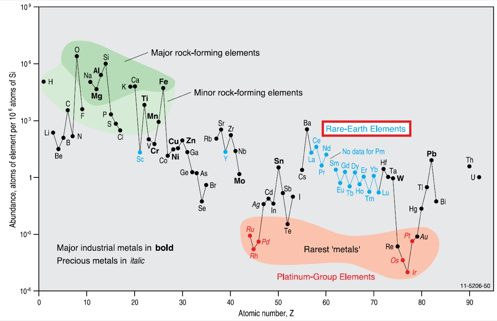
So how rare are they? Not very. Cerium and lanthanum are more common than tin, and some REE are as common as copper. Their abundance falls from the light to the heavy end. The rare thing is a process that concentrates them enough to make an economic deposit. slide 6 lecture recording, 3 Nov
How the REE fractionate
The REE are so similar that, in the past, they were hard to analyse separately. Geologists then found that small differences between them record processes. To compare samples, you divide each REE value by a standard. This is . The usual standard is CI chondrite, a primitive meteorite. Others are Post-Archean Australian Shale (PAAS) for sediments and world average coal for coals. The standard must have formed by a similar process to your samples. slide 7 lecture recording, 3 Nov
Almost all the REE are trivalent (3+). There are two exceptions. In reducing conditions, such as a magma, europium can become Eu²⁺. Eu²⁺ has the same charge and almost the same size as Ca²⁺, so it swaps into calcium sites, especially in plagioclase. Cerium can oxidise to Ce⁴⁺ near the surface (more in the clay section). slides 8 and 12 lecture recording, 3 Nov
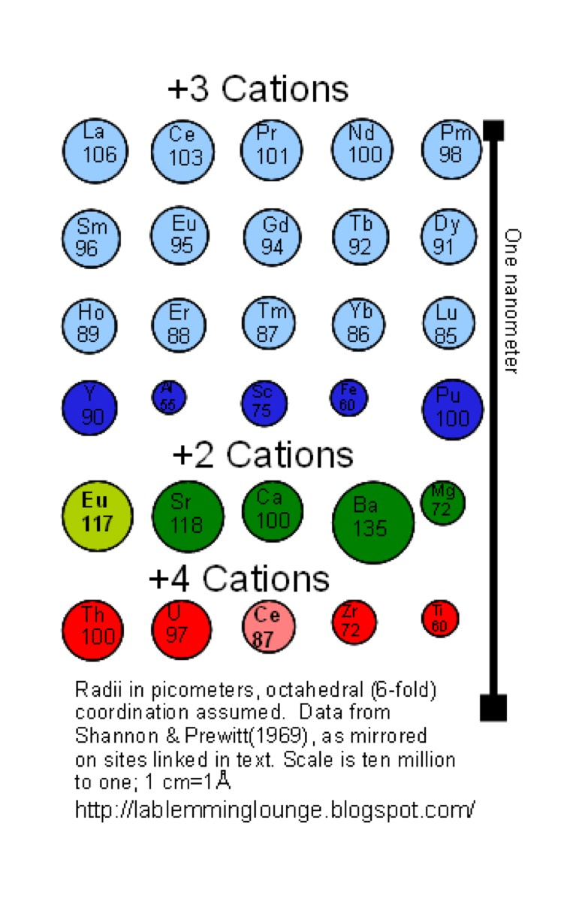
The ions get smaller from La to Lu. This is the . Some minerals prefer the larger LREE, and others prefer the smaller HREE. This is the main reason the LREE and HREE separate (fractionate). Mafic minerals (garnet, pyroxene, hornblende) prefer the HREE, so melting in the mantle that leaves garnet behind strips HREE from the melt. Feldspar and quartz take few REE, except that plagioclase takes Eu. slides 9 and 10 lecture recording, 3 Nov
| Feature on the plot | What caused it |
|---|---|
| Negative Eu anomaly (a dip at Eu) | Plagioclase crystallised and was removed; a long-fractionated granite |
| Steep slope, LREE high | LREE-rich source or mineral, such as a carbonatite |
| HREE high relative to LREE | A mineral that prefers small ions, such as zircon or xenotime |
| Ce anomaly (a spike or dip at Ce) | Oxidation of Ce³⁺ to Ce⁴⁺ near the surface |
slides 9 to 12, 23 and 54
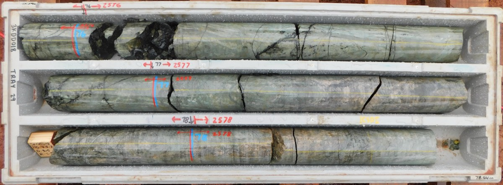
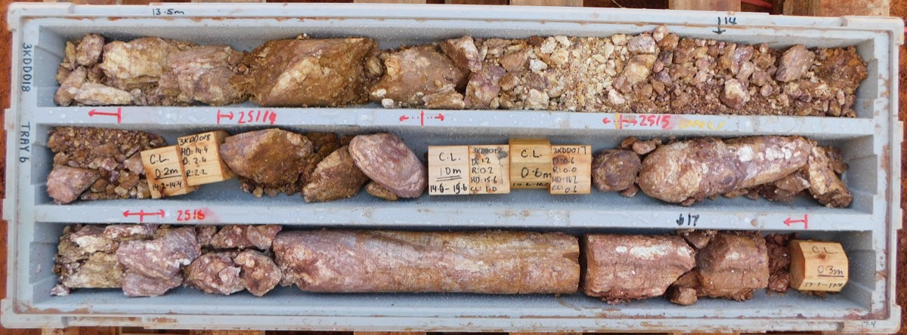
Describe both trays. Which one would you expect to have more REE, and why?
Show what I see
- A: hard, grey-green, complete core: fresh rock (a skarn).
- B: soft, broken, brown to red and cream material: weathered regolith.
The weathered regolith (B) is about two orders of magnitude richer in REE than the fresh skarn (A); the richest sample has about 13 000 ppm REE + Y. Both have the same small Eu dip on the chondrite plot, which shows that the regolith formed from this host rock. This is the lecturer's own research. slide 11 lecture recording, 3 Nov
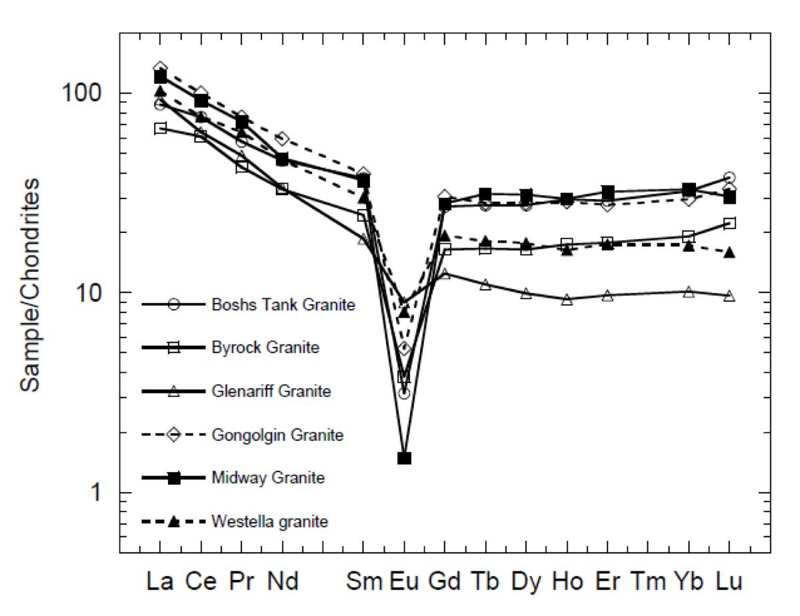
Read the plot0 / 4
REE minerals
The REE occur in almost every mineral, but usually in tiny amounts. Some minerals are very rich in them: carbonates and fluorocarbonates, and the phosphates and silicates zircon, apatite and monazite. Carbonatites (igneous rocks with more than 50% carbonate minerals) are very rich in LREE. Carbonate melts take up REE better than silicate melts, and the common carbonate minerals do not take REE. So the REE build up in the remaining melt until REE-rich accessory minerals crystallise. slides 13 and 14 lecture recording, 3 Nov
More than 250 minerals contain REE, but three of them supply most economic deposits: , and . slide 19
| Mineral | Formula | % REE oxide |
|---|---|---|
| Bastnäsite | (Ce,La,Nd,Y)(CO₃)F, a fluorocarbonate | 70 to 74 |
| Monazite | (Ce,La,Nd,Th)PO₄, a phosphate (LREE) | 35 to 71 |
| Xenotime | YPO₄, a phosphate (HREE) | 52 to 67 |
| Cerianite | (Ce⁴⁺,Th)O₂ | 81 |
| Loparite | (Ce,Na,Ca)(Ti,Nb)O₃ | 32 to 34 |
| Apatite | Ca₅(PO₄,CO₃)₃(F,Cl,OH) | up to 19 |
slide 16
Bastnäsite is a stable mineral because the charges balance: CO₃²⁻ plus F⁻ gives −3, which matches one REE³⁺. Most REE minerals take all the REE but prefer either the light or the heavy ones. Because the REE fractionate as a crystal grows, REE minerals are almost always finely zoned. The REE often occur with carbonate, phosphate, fluorine, iron and titanium. slides 16 and 17 lecture recording, 3 Nov
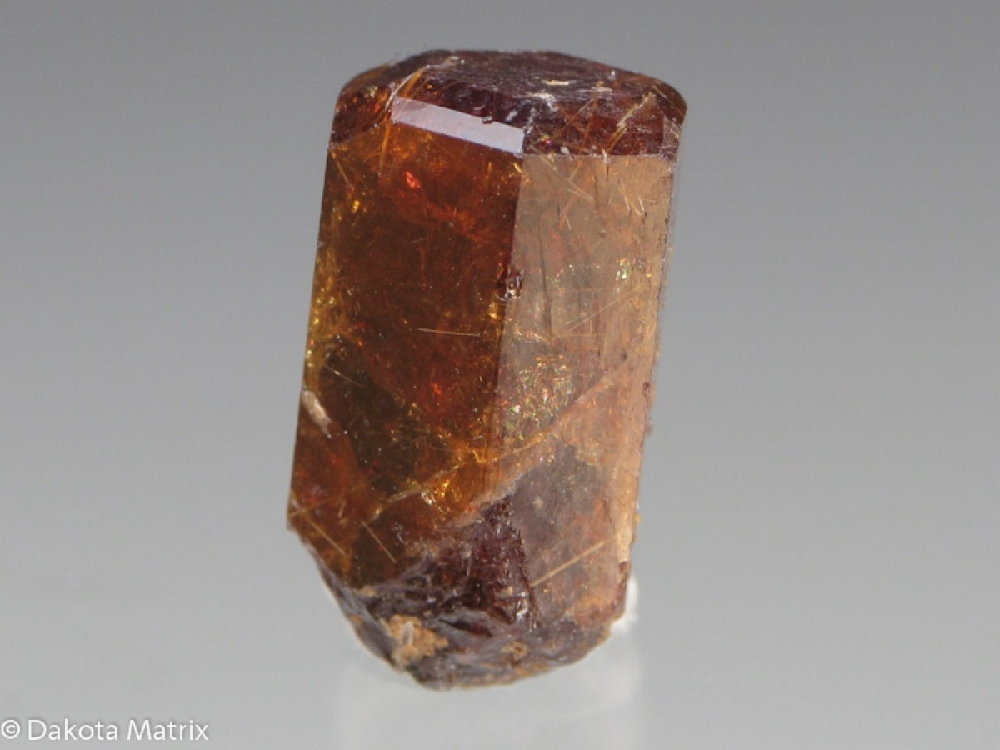
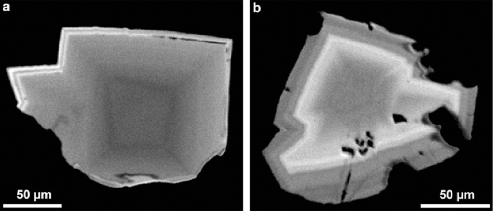
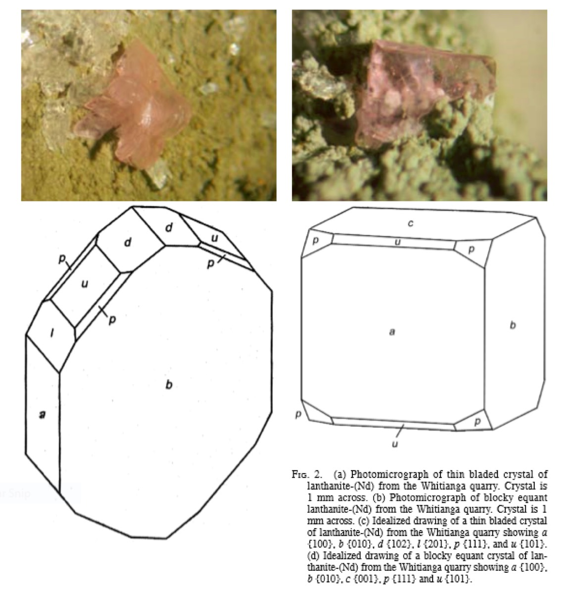
These pink crystals, a few millimetres across, grew in holes in a weathered andesite in New Zealand. Are they primary or secondary? What do you think holds the colour?
Show what I see
- Small pink, bladed to tabular crystals lining holes and fractures on altered rock.
This is lanthanite-(Nd), Nd₂(CO₃)₃·8H₂O, a hydrated REE carbonate from Whitianga quarry. It is secondary: it grew at low temperature from water in the weathered andesite, with zeolite (clinoptilolite), pyrite and siderite. The real formula contains almost every REE, which is typical: you must treat the REE as one group. Ian Graham described this mineral in 2007. slides 20 and 21 lecture recording, 3 Nov
- REE minerals are usually fine-grained accessory minerals, so you rarely see big crystals; collectors' specimens are exceptions.
- Look for the associations: carbonate, phosphate, fluorine, iron and titanium.
- Monazite: orange-brown grains (LREE). Xenotime: the HREE phosphate. Apatite can be blue when it has ~10% REE.
Resistate minerals and zircon
are very hard to break down or dissolve. Zircon, monazite, xenotime and apatite (apatite less so) all contain a lot of REE, and they survive weathering. So they keep a record of earlier events for which no other evidence remains. slide 22 lecture recording, 3 Nov
Zircon occurs in most igneous rocks and is common in heavy mineral deposits. It usually has a lot of uranium, so it is the main mineral for U-Pb dating. It contains a few weight percent REY, mostly HREE, and often has a positive Ce anomaly. Zircon megacrysts (very large zircon crystals) in basalts from eastern Australia to Russia came from many older magmas with a wide range of ages and temperatures; young basalts later picked them up. Hf isotopes in zircon give the depth of crystallisation, and Ti content gives its temperature. slides 23 to 25 lecture recording, 3 Nov
Uses and the market
Today the REE matter mostly for permanent magnets: very small, very strong magnets in electric vehicles, phones, computers, wind turbines and defence systems. Magnets account for about 95% of REE use by value. The four "magnet REE" are neodymium, praseodymium, dysprosium and terbium. Demand for them has doubled since 2015 and is expected to rise by another third by 2030. Other uses are metallurgy, ceramics, battery alloys, catalysts, polishing, glass and phosphors. slides 27 and 28 lecture recording, 3 Nov
Who supplies the REE
Tonnes of REE oxide from slide 30 (USGS). Burma, Thailand and Nigeria have no reserve figure.
Production was steady from the mid-1990s to the mid-2000s and rose sharply from about 2018. China dominates mining, and it dominates refining and magnet making even more (slide 33). That is why the REE are on every critical list. Prices are very volatile and depend on politics; yttrium, once almost worthless, has recently spiked. The magnet REE and the HREE are worth more than the LREE. At many mines, lanthanum and cerium go to waste. Brazil's reserves have grown fast and are now second (21 Mt in 2026). slides 29 to 33, 36 lecture recording, 3 Nov
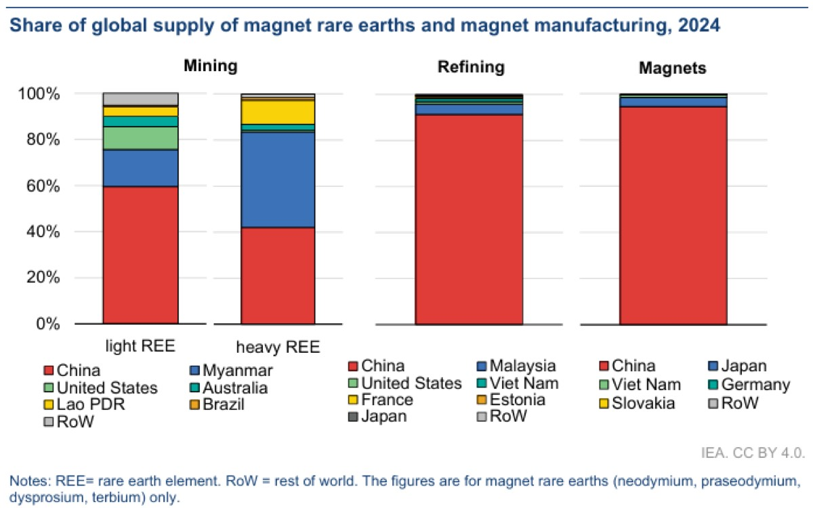
History: monazite placers came first, then Mountain Pass in the USA (a carbonatite), then Bayan Obo made China dominant. A REE project is judged by its LREE to HREE ratio, and today mostly by its magnet REE content. slides 34 to 36, 59 lecture recording, 3 Nov
Deposit types
REE deposits are grouped by their geological setting into primary and secondary types. slide 38 lecture recording, 3 Nov
| Group | Type | Examples |
|---|---|---|
| Primary | Magmatic: carbonatites, syenites, alkali granites | Bayan Obo, Mt Weld, Mountain Pass |
| Primary | Volcanic: trachytes, tuffs and reworked tuffs | Toongi (Dubbo), NSW; the ash beds of Lecture 18 |
| Primary | Hydrothermal veins | Cross-cutting veins |
| Secondary | Weathering: clays, laterites, Mn nodules, placers | Ion adsorption clays (south China), heavy mineral sands (Eucla) |
slides 38 and 39, lecture recording, 3 Nov
On a world map of REE deposits, the largest are carbonatites (Mt Weld in Australia, Bayan Obo in China). Alkaline igneous deposits include Toongi near Dubbo: its REE are in fine-grained zirconosilicates, which are hard to process. Ion adsorption clays on weathered granites have become important because their HREE are so easy to extract. In Australia, heavy mineral sands along old and modern coasts are common prospects. Mary Kathleen in Queensland, a skarn, produced REE as a by-product of uranium. Olympic Dam probably produces the most REE in Australia, but almost all of it goes to the waste dump. slides 39 and 46 lecture recording, 3 Nov
Bayan Obo, China
Bayan Obo, at Baotou in Inner Mongolia, is the world's largest REE resource. It is a Fe-Nb-REE deposit of Mesoproterozoic age, part way between a carbonatite (like Mt Weld) and an IOCG deposit (like Olympic Dam). It is hosted in dolomitised marble and minor K-rich slate. The ore is REE-Fe oxide ore with bastnäsite, monazite, niobite and magnetite. It was found as an iron deposit in 1927 and began producing REE in 1960. It would be mined for its iron anyway; the REE are a by-product. slides 40 and 41 lecture recording, 3 Nov
It lies in a REE belt 400 km long on the northern margin of the North China block. Most geologists link it to Mesoproterozoic carbonatites and alkaline rocks (syenites) in a continental rift. Palaeozoic intrusions and deformation later strongly affected it. Alteration () is widespread, with fluorite, aegirine-augite, riebeckite, albite and quartz. The ore is zoned from disseminated (outside) through banded to massive ore. It formed in several hydrothermal episodes. Grades are always above 1% and average about 6% REO in the Main and East ore bodies (57.4 Mt REO). slides 41 and 42 lecture recording, 3 Nov
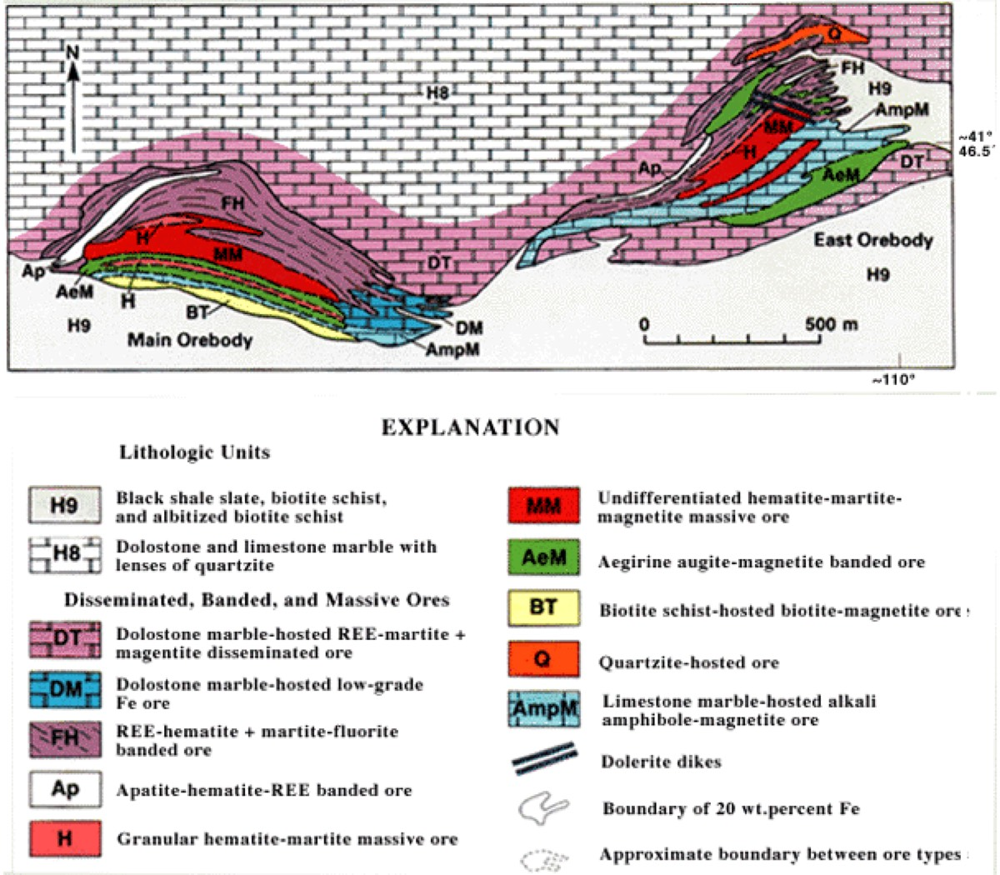
Mt Weld, Western Australia
Mt Weld, owned by Lynas, is Australia's main REE deposit. It is a Proterozoic (about 2.03 Ga) carbonatite that intruded the fault-bounded Laverton tectonic zone. It was later metamorphosed to greenschist facies. The region is an alkaline province with alkaline ultramafic-mafic rocks, kimberlites and carbonatites. Most importantly, the REE were enriched again in the supergene zone during lateritic weathering. The ore is LREE-rich, with P, Nb and Ta. The Crown deposit has 37.7 Mt at 1.16% REO and 1.07% Nb₂O₅. The Swan phosphate deposit has 77 Mt at 13.5% P₂O₅. slide 47 lecture recording, 3 Nov
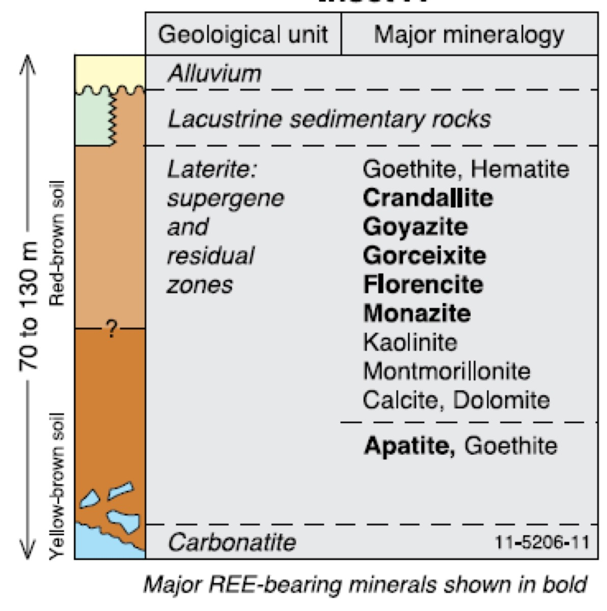
From the top down, which layers are there? Which zone has been mined for REE, and what made it rich?
Show what I see
- Young alluvium and lake sediments on top, then a thick laterite (supergene and residual zones), then an apatite-rich zone, then fresh carbonatite at the base.
- The laterite lists many REE minerals in bold: crandallite, goyazite, gorceixite, florencite, monazite.
Mining has focused on the laterite. Weathering removed carbonate and kept the resistate REE minerals, so the REE became relatively enriched, and new secondary REE phosphates formed. Below is the apatite-rich phosphate zone, and the fresh carbonatite is only now being considered for mining. slide 50 lecture recording, 3 Nov
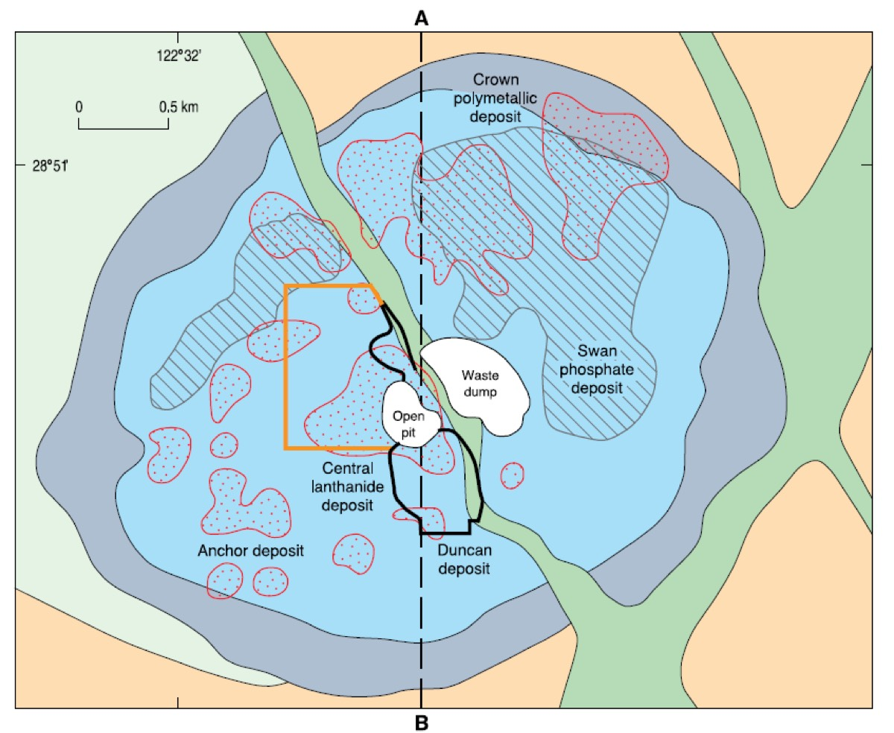
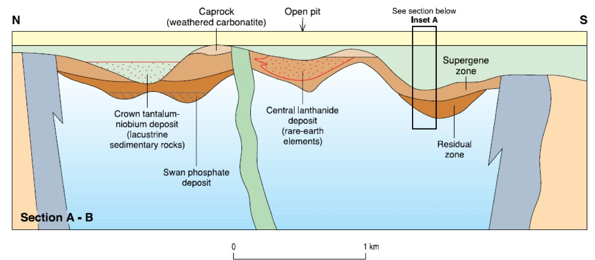
Ion adsorption clays
form when granites weather in southern China and Myanmar. They are very important because they are HREE-rich, unlike the igneous deposits, which are LREE-rich. They supplied 20% of world production in 2010, and more than 80 to 90% of HREE supply by 2017. The weathered granite itself is the ore: about 50% of its REY can be exchanged off the clay. Grades are only 140 to 6500 ppm REY, typically about 800 ppm, much lower than carbonatite ore. The parent granites are Jurassic to Cretaceous, related to subduction or to rifts inside plates. Their REE came from fluorcarbonates, allanite and titanite that weathered. slide 51 lecture recording, 3 Nov
Why can such low grades pay? The REE are not inside minerals. They are adsorbed: weakly attached to the surface of clay minerals (kaolinite and halloysite). Outer-sphere adsorption is a weak electrostatic attraction between REE³⁺ and the negative clay surface; inner-sphere adsorption makes a direct bond and is stronger. In some places, the miners simply wash the hill with weak acid and collect the REE at the bottom. There is no need to break down minerals in an expensive plant. slide 52 lecture recording, 3 Nov
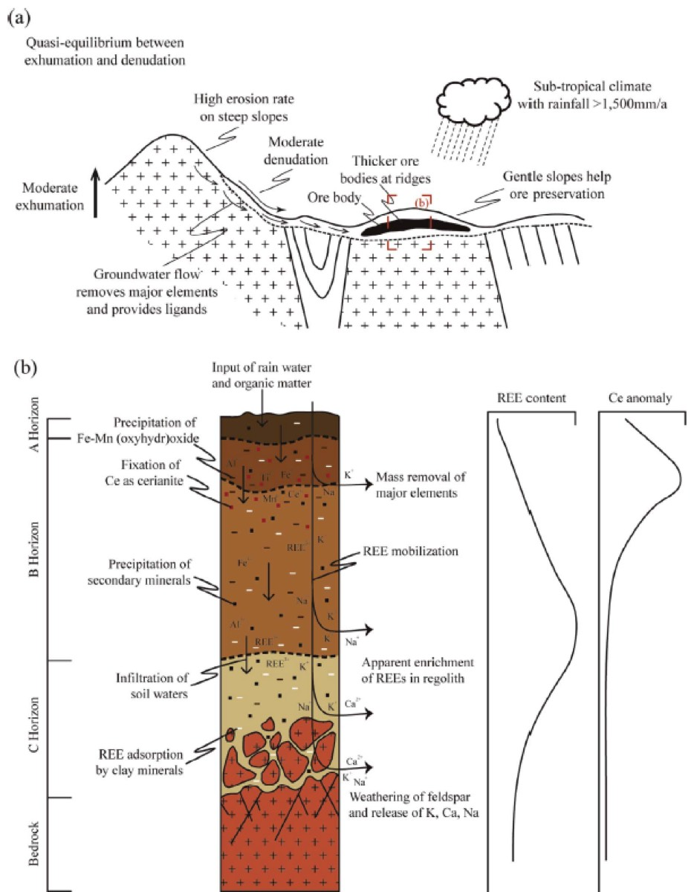
How they form: in a subtropical climate, acid weathering breaks down the REE minerals near the top of the profile. REE³⁺ ions move down in solution. Deeper, the pH rises, the REE complexes become unstable, and the REE adsorb onto kaolinite and halloysite (and some REE minerals such as rhabdophane form). Cerium behaves differently: near the surface it oxidises to Ce⁴⁺ and drops out as cerianite (CeO₂) or in Mn oxides. So shallow horizons show a positive Ce anomaly, and the other REE are enriched below, with a negative Ce anomaly. The profile is usually 6 to 10 m thick (up to 60 m), so the ore is very shallow. REE also collect in low valleys between weathered granite hills. slides 53 to 55 lecture recording, 3 Nov
Drill the weathering profile0 / 5 logged
Tap each horizon to log it. Then pick the horizon to mine.
Invented values for teaching, based on slides 51 to 54 (typical ore about 800 ppm REY; Ce enriched near the top; profile 6 to 10 m).
Heavy mineral sands
are Early Tertiary to Recent. Weathering of igneous and sedimentary rocks over a large catchment releases resistate minerals. Waves then concentrate them along , old or modern beach lines. The main minerals are rutile (TiO₂), ilmenite (FeTiO₃) and zircon, with the REE in monazite, xenotime and zircon. So the deposit is polymetallic: REE, Ti and Zr, plus P, Nb and Ta. Monazite carries mostly LREE, and xenotime mostly HREE. slides 56 and 57 lecture recording, 3 Nov
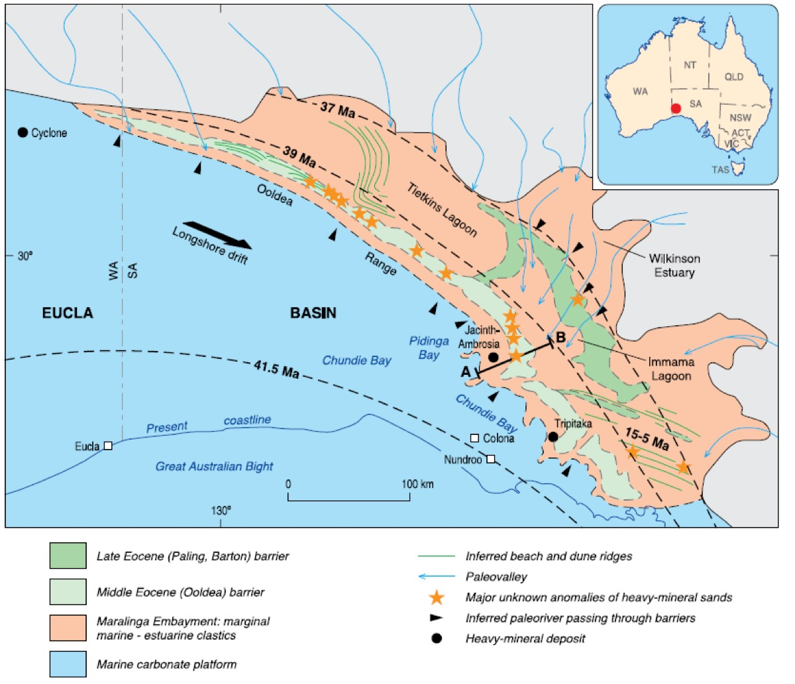
Find the dated lines on the map. How would you use them to explore for mineral sands?
Show what I see
- Several curved lines inland of the present coast, with ages in millions of years (for example 41.5 and 37 Ma).
- Heavy mineral deposits marked along these lines.
Each line is an old strand line, a former shoreline, dated with zircons. The shore moved north-east over time. Long wave action along each old beach concentrated the heavy minerals, so you explore by following the old shorelines. slide 58 lecture recording, 3 Nov
What makes a deposit pay
Each deposit type pays for a different reason. Bayan Obo: the REE are a by-product of an iron mine. Mt Weld: the shallow laterite has very high grades (weight percent REO), so it pays even though it is rich in the less valuable LREE. Ion adsorption clays: shallow, easy to extract, and rich in valuable HREE, so 800 ppm is enough. Heavy mineral sands: shallow, natural concentration, and several products (Ti, Zr, REE). The cost of extraction (metallurgy) is very important. Today people judge a prospect by its magnet REE (Nd, Pr, Dy, Tb), not by total REE + Y. slide 59 lecture recording, 3 Nov
Name the mineral0 / 6
Classify the deposit0 / 6
- REE = La to Lu (+ Y = REY); LREE La to Sm, HREE Eu to Lu + Y; Pm not natural.
- Not rare in abundance; rare in concentration processes.
- Lanthanide contraction; Eu²⁺ for Ca²⁺ in plagioclase (negative Eu anomaly); Ce⁴⁺ near the surface (Ce anomaly).
- Economic minerals: bastnäsite, monazite (LREE), xenotime (HREE).
- Magnets: ~95% of value; Nd, Pr, Dy, Tb.
- Bayan Obo (by-product of Fe, ~6% REO), Mt Weld (carbonatite + laterite), IAD clays (HREE, ~800 ppm), mineral sands (strand lines).
Self-test
Answer each question out loud or on paper before you open it. If your answer was right, claim the ounces.
Glossary and flashcards
These are terms that the lecture expects you to know, or only explains briefly. Tap a dotted word in the text to see its meaning.
Flashcards
Where this goes next
Lecture 20 moves to diamonds, which come from kimberlites in the same kind of deep alkaline magmatism that brings carbonatites to the surface. Compare the ion adsorption clays here with the critical element ash beds of Lecture 18 and the laterites of Lecture 8.